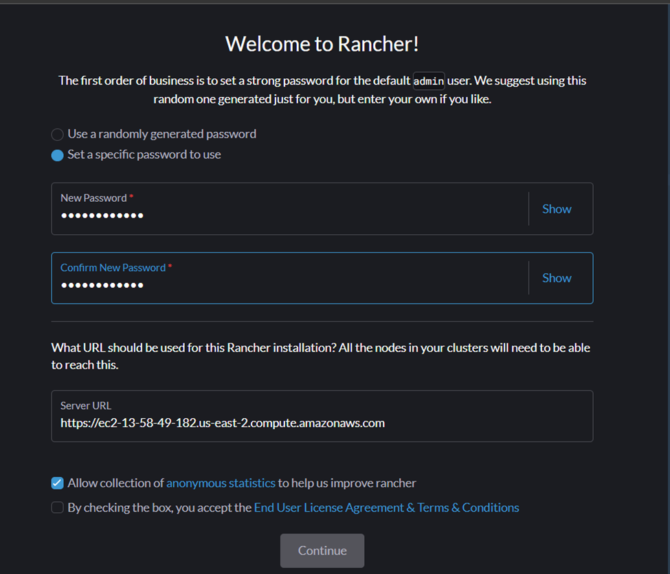

Deploying applications can be complex, but with the right tools, it becomes much easier. In this blog,
we'll show you how to use Docker to package your application into containers, making it easy to run
anywhere. Then, we'll use Kubernetes to manage these containers, ensuring your app can scale and stay
available. Rancher will help us handle Kubernetes clusters without much hassle, providing a
straightforward way to control everything. Lastly, we'll set up Jenkins to automate the deployment
process, so your app gets updated automatically whenever you make changes.
By the end of this blog, you'll know how to make your deployment process smooth and efficient. Whether
you're a beginner or looking to improve your skills, this guide will help you understand and implement
modern deployment practices using Docker, Kubernetes, Rancher, and Jenkins. Get ready to simplify your
workflow and make your applications more reliable and scalable.
Step - 1: Building a Tomcat application
- First install the JDK and Eclipse IDE for building Java application
- Now create new tomcat project - File -> New -> Dynamic Web Project
- Then create JSP pages in the src/main/webapp folder. The entry of the web application will be from index.jsp file.
- To run this application click on Run and then select Run on Server and then select your Tomcat location or install from the IDE.
- This will run the application and opens it in the browser.
- To create the WAR file, right click on the project and select export and select the WAR file and destination. This will generate a WAR file which can be used to run on Tomcat Server.
Step - 2: Pushing to DockerHub
- First create a DockerHub account in the official website https://hub.docker.com/
- Now we have to publish the war file to the DockerHub. Write a Dockerfile and the contents
'FROM tomcat:9.0-jdk15
COPY StudentSurvey.war /usr/local/tomcat/webapps ' - Commands to login to DockerHub account and publish the image
docker login -u {DOCKERHUB_USERNAME} -p ${DOCKERHUB_PASSWORD}
docker build -t {DOCKERHUB_USERNAME}/{IMAGE_NAME} . - Now in the DockerHub website you can see the uploaded image and this can be used in the Rancher and Jenkins.
Step - 3: Setting up AWS
- Now create a free AWS account and open EC2 under the services.
- First create a new instance for Rancher. Select the OS image as Ubuntu and version is Ubuntu 22.04 with t2.medium.
- Under the network tab add the HTTP and HTTPS ports as well for routing and select the disk size of 16GB.
- Now create another instance for the Jenkins. Same as rancher select same OS image and same version.
- Under the network tab add the HTTP, HTTPS and 8080 TCP ports as well for routing and select the disk size of 16GB.
- Final step create a new IAM user with the Administrator Access. After that under the security tab select the access key and create a new access key with CLI access. Copy these credentials.
Step - 4: Rancher Desktop Setup
-
Use the below commands to install the Rancher using Docker.io
sudo apt-get update
sudo apt install docker.io
sudo usermod -aG docker $USER
docker -v (to verify Docker installation)
sudo docker run --privileged=true -d --restart=unless-stopped -p 80:80 -p 443:443 rancher/rancher -
Now open a new browser and enter the public IP address of the instance where Rancher is being
deployed.
You will see the rancher dashboard like this.
-
Now use the below commands to get the temporary password and use it to reset the password.
First retrieve the container ID.
sudo docker ps
sudo docker logs container_id 2>&1 | grep "Bootstrap Password:"
 -
Now create a new cluster with Amazon EC2 as the cluster. Here you need to use the credentials which
are copied in the previous step.
This step will take around 10-15 mins to make the cluster active.
-
Next we need to store the DockeHub credentials in this cluster. For this select storage tab and then
secrets and create registry.
Select DockerHub in the drop down and enter the username and password and store the dockerhub
credentials.
-
Then creating a new deployment for the Tomcat web application. Now open the deployments tab and
create a new deployment. In this enter the image name and select the dockerhub credentials and
create a new node port. Set the private port 8080 and the listening port as 30002. This will create
a new endpoint and this can be accessed with the Enpoint button in the deployments page.
-
This is the final deployed application in the tomcat web server using the Rancher.
Step - 5: Setting up Jenkins
-
Execute the below commands in the Jenkins EC2 machine.
sudo apt-get update
sudo apt install openjdk-11-jdk
wget -q -O - https://pkg.jenkins.io/debian-stable/jenkins.io.key | sudo apt-key add -
sudo sh -c 'echo deb http://pkg.jenkins.io/debian-stable binary/ > /etc/apt/sources.list.d/jenkins.list'
sudo apt-key list
sudo apt-key del “key-id”
sudo apt-key adv --keyserver keyserver.ubuntu.com --recv-keys 5BA31D57EF5975CA
sudo apt-get update
sudo apt install jenkins
-- check the status of the jenkins --
systemctl status Jenkins
The jenkins dashboard after successful installation.
-
Now install the Docker.io and snapd for the Kubernetes access to the Rancher. Commands -
sudo apt-get update
sudo apt-get install docker.io
sudo usermod -a -G docker jenkins
sudo su
systemctl status jenkins
sudo apt install snapd
sudo snap install kubectl --classic
- Here comes the final step for connecting the jenkins with the rancher. Copy the kubecondig content from the rancher desktop website (this button is placed on upper-right corner of the website). This should be copied to the file name config in the file path /var/lib/jenkins/.kube
-
In the dashboard, create a new deployment and select the pipeline option. Now under the poll SCM,
enter the frequency of git pull
(for instance we are using * * * * * this means the Jenkins will check for any changes every
minute). And then navigate to the bototm of the page
and enter the GitHub repository, the select the Script from SCM where the Jenkinsfile is present. In
this file all the script is written link
different stages named Building the WAR file, building and pushing the image to DockerHub and then
restarting the deployment in the Rancher.
-
This is the successful script run from the after the git push and changing the code a little bit.
Completed
- Finally we have completed the setup of AWS, Rancher Desktop and Jenkins for Tomcat web application.
- So, when we make changes to the code and push this to the GitHub, this will trigger the Jenkins and it will start the build. First step it will create new WAR file based on the Dockerfile contents and then publishes this image to the DockerHub. Then after it's gonna restart the deployment in the rancher and the rancher will again pull the image from the DockerHub and update the application.
GitHub Link -
https://github.com/Krishna1303/Student-Survey